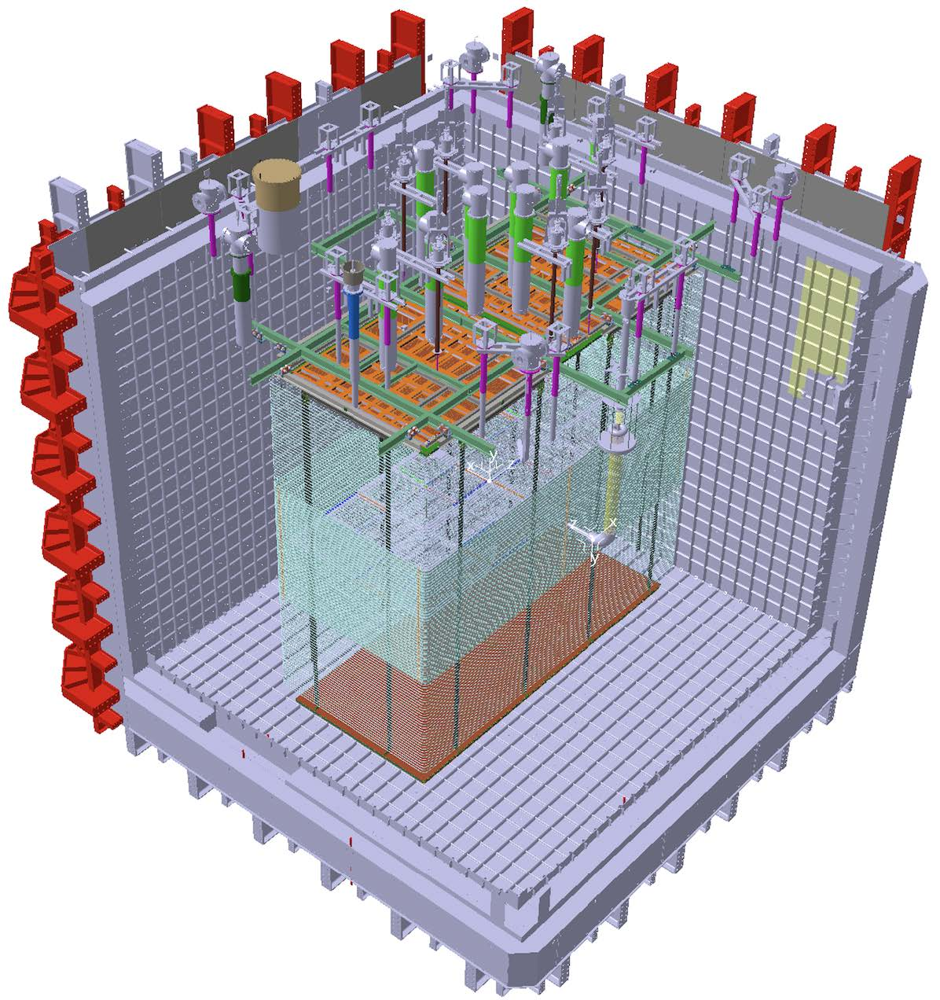

High Energy Physics Research
DUNE (Deep Underground Neutrino Experiment)

I am a member of the DUNE collaboration, focusing on neutrino oscillations and the search for CP violation in the lepton sector.
My work involves the simulation and hardware testing of Photon Detection Systems to improve the energy reconstruction of neutrino interactions.
ProtoDUNE Vertical Drift

At CERN, I contribute to the ProtoDUNE Vertical Drift effort, focusing on the installation and commissioning of the Photon Detection modules.
This includes analyzing the light yield and timing resolution of the X-ARAPUCA collectors in a liquid argon environment.